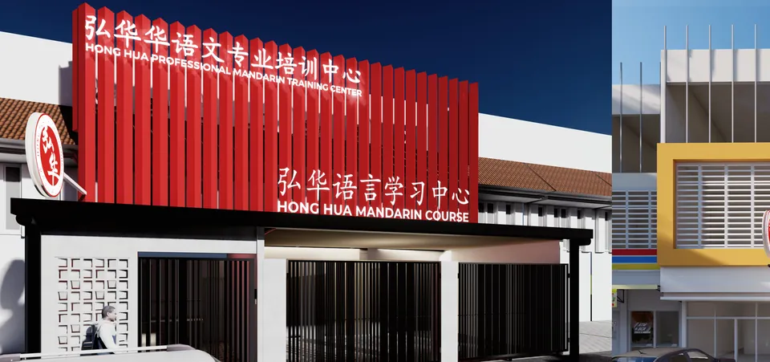
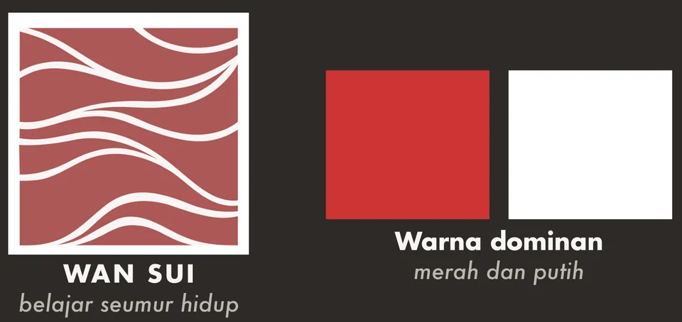
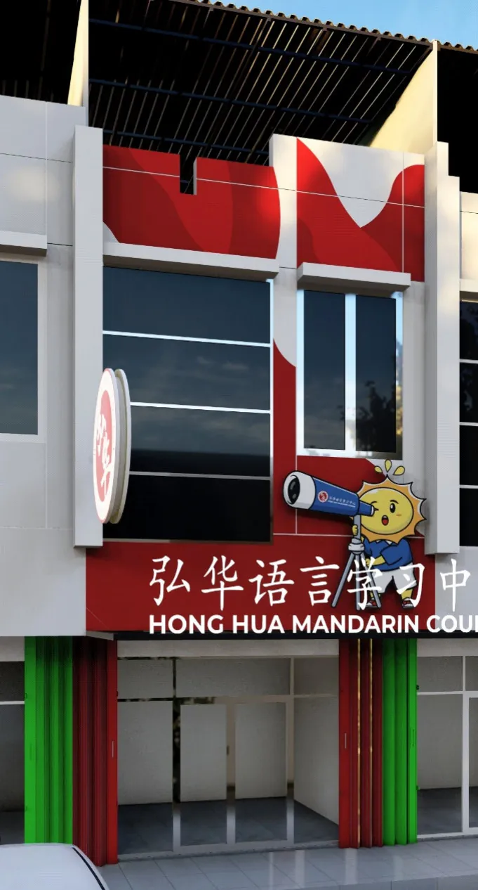
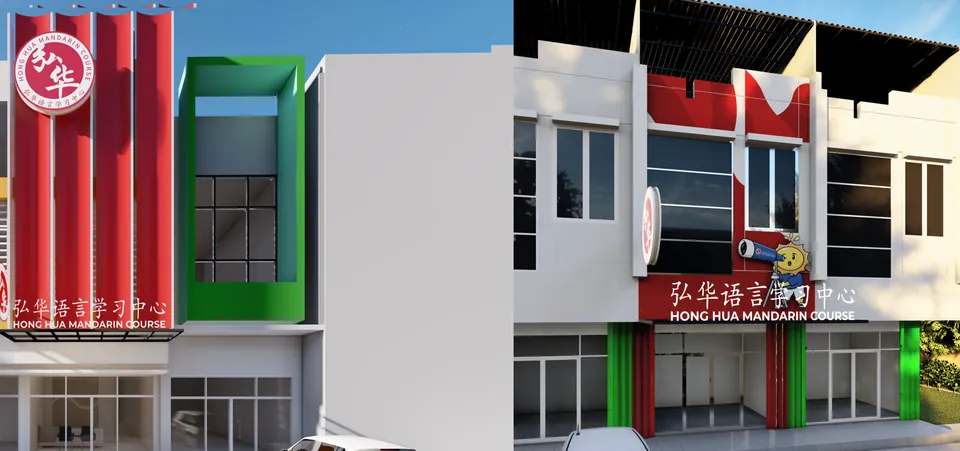
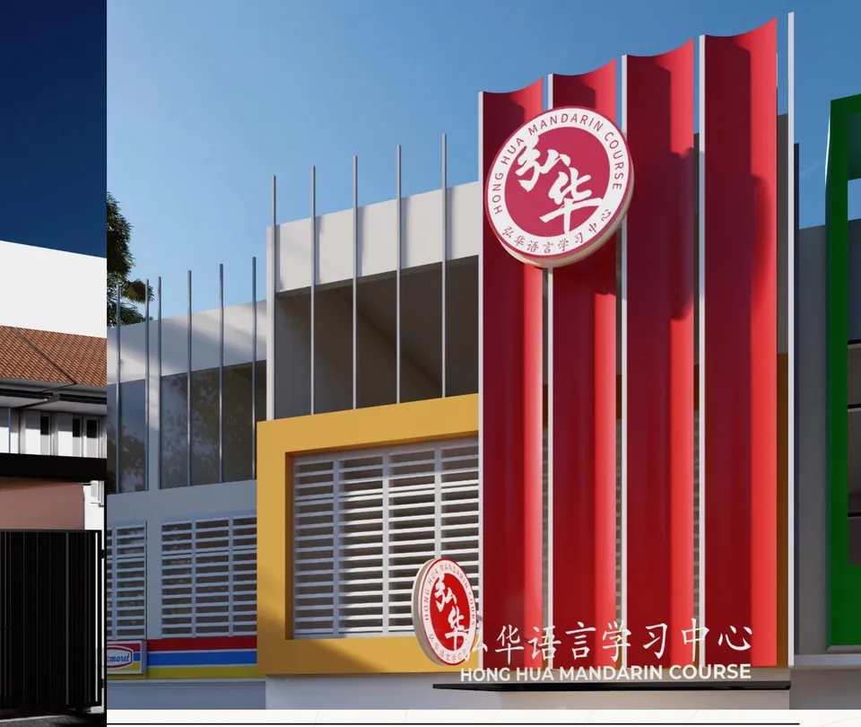

![]([{"src":"../../assets/img/paragon/gerbang-organik-1600.webp","srcset":"../../assets/img/paragon/gerbang-organik-480.webp 480w, ../../assets/img/paragon/gerbang-organik-960.webp 960w, ../../assets/img/paragon/gerbang-organik-1600.webp 1600w, ../../assets/img/paragon/gerbang-organik-2400.webp 2400w","label":"Paragon. Gerbang organik menuju area pajang","href":"../../karya/paragon/"},{"src":"../../assets/img/taman-medyra/gerbang-1600.webp","srcset":"../../assets/img/taman-medyra/gerbang-480.webp 480w, ../../assets/img/taman-medyra/gerbang-960.webp 960w, ../../assets/img/taman-medyra/gerbang-1600.webp 1600w, ../../assets/img/taman-medyra/gerbang-2400.webp 2400w","label":"Taman Medyra. Satu-satunya gerbang ada di sisi timur. Render tahap awal","href":"../../karya/taman-medyra/"},{"src":"../../assets/img/paragon/area-pandang-1600.webp","srcset":"../../assets/img/paragon/area-pandang-480.webp 480w, ../../assets/img/paragon/area-pandang-960.webp 960w, ../../assets/img/paragon/area-pandang-1600.webp 1600w, ../../assets/img/paragon/area-pandang-2400.webp 2400w","label":"Paragon. Area pandang, koridor yang menghadap lantai produksi","href":"../../karya/paragon/"},{"src":"../../assets/img/hong-hua-interior/selasar-1600.webp","srcset":"../../assets/img/hong-hua-interior/selasar-480.webp 480w, ../../assets/img/hong-hua-interior/selasar-960.webp 960w, ../../assets/img/hong-hua-interior/selasar-1600.webp 1600w, ../../assets/img/hong-hua-interior/selasar-1921.webp 1921w","label":"Hong Hua Mandarin: Interior. Selasar lantai 2","href":"../../karya/hong-hua-interior/"}])
05 / 08 · Komersial
Hong Hua MandarinArsitektur


Tiga fasad Hong Hua dengan bahasa desain yang sama: bidang merah dan logo bulat.
Konsep fasad
Wajah bangunan yang mudah dikenali dari jalan diambil dari salah satu tagline Hong Hua, yaitu Wan Sui.
- Membaca nama
- Hong Hua bermakna menyebarkan ilmu bahasa secara luas.
- Mencari bentuk
- Gelombang air diterjemahkan menjadi bidang merah di fasad.
- Menjaga konsistensi
- Bidang merah dan logo bulat dipakai di setiap bangunan.




Air dan warna
Air adalah simbol umur panjang dan gerak yang dinamis. Dalam budaya Tionghoa, air melambangkan sesuatu yang berumur panjang.
Merah untuk semangat menyebarkan ilmu bahasa, putih untuk ketulusan dalam mendidik.
- Gelombang air
- Panjang umur, dinamis
- Merah dan putih
- Semangat dan ketulusan
- Mudah dikenali
- Sama di setiap fasad


Fasad


